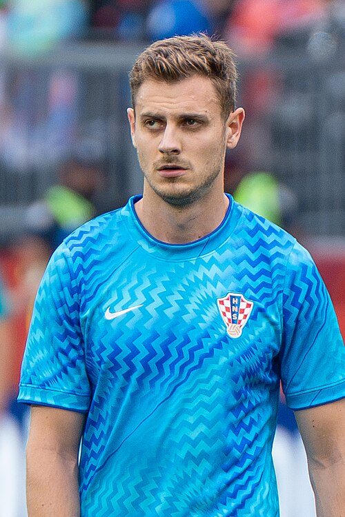

Ezzcoins › Player pages › Josip Stanišić
80
RB

Stanišić
PAC76
SHO46
PAS69
DRI71
DEF81
PHY75
Photo (cropped): Bryan Berlin · CC BY-SA 4.0 · Wikimedia Commons
Photo source
https://commons.wikimedia.org/wiki/File:Josip_Stanisic_Croatia_v_Portugal_2_July_2026-022.jpg
Licence: https://creativecommons.org/licenses/by-sa/4.0
Josip Stanišić
80 RB · FC Bayern München · Bundesliga ·  Croatia
Croatia
No console price yet. Add this player to your watchlist on Ezzcoins: the most-watched players get a price every hour.
PAC76
SHO46
PAS69
DRI71
DEF81
PHY75
- Position
- RB (also CB, LB, RM)
- Club
- FC Bayern München
- League
- Bundesliga
- Nation
- Croatia
- Skill moves
- 2★
- Weak foot
- 4★
- Preferred foot
- Right
More from FC Bayern München
- 90
 Harry KaneST
Harry KaneST - 90
 Michael OliseRM
Michael OliseRM - 88
 Joshua KimmichCDM
Joshua KimmichCDM - 88Klara BühlLM
- 88
 Luis DíazLM
Luis DíazLM - 87Dayot UpamecanoCB
- 87Jamal MusialaCAM
- 87Jonathan TahCB